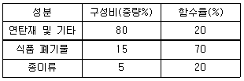
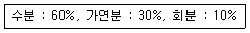
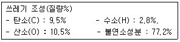
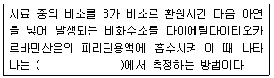
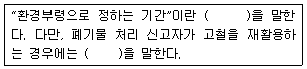
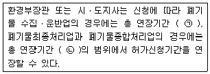

폐기물처리산업기사 (2015-05-31 기출문제)
1과목: 폐기물개론
1. 선별방식 중 각 물질의 비중차를 이용하는 방법으로 약간 경사진 평판에 폐기물을 흐르게 한 후 좌우로 빠른 진동과 느린 진동을 주어 분류하는 것은?
- Secators
- Stoners
- Table
- Jig
(정답률: 62%)

2. 다음 중 폐기물이 가지고 있는 특성을 중심으로 위해성을 판단하는 인자로 볼 수 없는 것은?
- 부식성
- 부패성
- 반응성 또는 인화성
- 용출특성
(정답률: 88%)
3. 1992년 리우데자네이로에서 가진 유엔환경개발회의에서 대두된 용어(약자)로 [친환경적이면서 지속가능한 개발]이란 뜻을 가진 것은?
- EPSS
- ESSK
- ECCZ
- ESSD
(정답률: 88%)
4. 폐기물중 철금속(Fe)/비철금속(Au,Cu)/유리병의 3종류 각각 분리할 수 있는 방법으로 가장 적절한 것은?
- 자력 선별법
- 정전기선별법
- 와전류선별법
- 풍력선별법
(정답률: 91%)
5. 폐기물의 감영감량은 다음 중 어떻게 산출되는가?
- 수분함량+가연분함량+회분함량
- 가연분함량+회분함량
- 수분함량+회분함량
- 수부함량+가연분함량
(정답률: 53%)
6. 폐기물 매립 시 파쇄를 통해 얻을 수 있는 이점과 가장 거리가 먼 것은?
- 매립작업만으로 고밀도 매립이 가능하다.
- 표면적 감소로 미생물 작용이 촉진되어 매립지 조기안정화가 가능하다.
- 곱게 파쇄하면 복토 요구량이 절감된다.
- 폐기물의 밀도가 증가되어 바람에 멀리 날아갈 염려가 적다.
(정답률: 67%)
7. 폐기물 1ton을 건조시켜 함수율을 50%에서 25%로 감소시켰다. 폐기물의 중량은 얼마로 되겠는가?
- 0.33 ton
- 0.5 ton
- 0.67 ton
- 0.75 ton
(정답률: 81%)
8. 쓰레기 발생량을 예측하는 방법 중 쓰레기 배출에 영량을 주는 모든 인자를 시간에 대한 함수로 나타낸 후 시간에 대한 함수로 표면된 각 영향인자들 간의 상관관계를 수식화한 것은?
- 경향법
- 추정법
- 동적모사모델
- 다중회귀모델
(정답률: 87%)
9. 폐기물 성분 중 비가연성이 50wt%를 차지하고 있다. 밀도가 480kg/m3인 폐기물이 12m3있을 때 가연성 물질의 양(kg)은?
- 2240
- 2430
- 2880
- 2960
(정답률: 90%)
10. 하나의 수식으로 각 인자들의 효과를 총괄적으로 나타내어 복잡한 시스템의 분석에 유용하게 사용할 수 있는 쓰레기 발생량 예측방법은로 가장 적절한 것은?
- 경향법
- 동적모사모델
- 정적모사모델
- 다중회귀모델
(정답률: 73%)
11. 폐기물의 관리에 있어서 가장 우선적으로 고려하여야 할 사항은?
- 재회수
- 재활용
- 감량화
- 소각
(정답률: 93%)
12. 쓰레기 발생량 조사방법으로 적절하지 않은 것은?
- 물질수지법(material balance method)
- 적재차량 계수분석법(load count analysis)
- 수거트럭 수지법(collection truck balance method)
- 직접계근법(direct weighting method)
(정답률: 73%)
13. 쓰레기 수거능을 판별할 수 있는 MHT라는 용어에 대한 설명으로 가장 적절한 것은?
- 1톤의 쓰레기를 수거하는 데 수거인부 1인이 소요하는 총 시간
- 1톤의 쓰레기를 수거하는 데 소요되는 인부 수
- 수거인부 1인이 시간당 수거하는 쓰레기 톤수
- 수거인부 1인이 수거하는 쓰레기 톤수
(정답률: 83%)
14. 도시 쓰레기 중 연탄재 함량이 감소됨에 따라 나타난 현상 중 틀린 것은?
- 도시 쓰레기를 구성성분으로 분류할 때 회분함량이 감소된다.
- 도시 쓰레기의 겉보기 밀도가 감소되었다.
- RDF 제조시 산술적 환산량(arithmetic equivalence)이 증가되었다.
- 연탄재 감소로 매립 시 복토재 사용량이 감소되었다.
(정답률: 47%)
15. 쓰레기 3성분의 조성비를 이용하여 쓰레기의 저위 발열량을 측정하는 방법은?
- 원소분석에 의한 방법
- 추정식에 의한 방법
- 조성분석에 의한 방법
- 단열열량계에 의한 방법
(정답률: 53%)
16. 어느 도시의 쓰레기를 분류하여 다음 표와 같은 결과를 얻었다. 이 쓰레기의 함수율은?

- 20.7%
- 27.5%
- 33.3%
- 38.5%
(정답률: 83%)
17. 삼성분이 다음과 같은 쓰레기의 저위발열량(kcal/kg)은?

- 약 890
- 약 990
- 약 1190
- 약 1290
(정답률: 71%)
18. 어떤 폐기물의 밀도가 200kg/m3인 것을 500kg/m3으로 압축시킬 때 폐기물의 부피변화는?
- 60%감소
- 64%감소
- 67%감소
- 70%감소
(정답률: 86%)
19. 쓰레기 10ton을 소각했더니 재의 용적이 1.14m3발생 되었다. 재의 밀도(kg/m3)는? (단, 재의 중량은 쓰레기 중량의 1/100이다.)
- 55
- 67
- 88
- 92
(정답률: 89%)
20. 적환장에 대한 설명으로 옳지 않은 것은?
- 최종처리장과 수거지역의 거리가 먼 경우 사용하는 것이 바람직하다.
- 저밀도 거주지역이 존재할 때 설치한다.
- 재사용 가능한 물질의 선별시설 설치가 가능하다.
- 대용량의 수집차량을 사용할 때 설치한다.
(정답률: 87%)
2과목: 폐기물처리기술
21. 유입수의 BOD가. 250ppm이고 정화조의 BOD제거율이 80%라면 정화조를 거친 방류수의 BOD는?
- 50ppm
- 60ppm
- 70ppm
- 80ppm
(정답률: 75%)
22. 내륙매립공법 중 도랑형공법에 대한 설명으로 옳지 않은 것은?
- 전처리로 압축시 발생되는 수분처리가 필요하다.
- 침출수 수집장치나 차수막 설치가 어렵다.
- 사전 정비작업이 그다지 필요하지 않으나 매립용량이 낭비된다.
- 파낸 흙을 복토재로 이용 가능한 경우 경제적이다.
(정답률: 65%)
23. 다음 중 탄질비(C/N, 건조질량비)의 값이 가장 작은 것은?
- 소나무
- 낙엽
- 돼지 분뇨
- 소화전 활성슬러지
(정답률: 65%)
24. 유효공극율 0.2, 점토층 위의 침출수 수두 1.5m인 점토차수층 1.0m를 통과하는데 10년이 걸렸다면 점토 차수층의 투수계수는 몇 cm/sec인가?
- 1.54×10-8
- 2.54×10-8
- 3.54×10-8
- 4.54×10-8
(정답률: 62%)
25. 소각시 다이옥신(Dioxin)의 발생억제(또는 제거) 방법에 관한 설명으로 틀린 것은?
- 로내 온도를 300~350℃ 범위로 일정하게 운전하여 다이옥신성분 발생을 최소화 한다.
- 배기가스 conditioning시 칼슘 및 활성탄분말 투입시설을 설치하여 다이옥신과 반응 후 집진함으로 줄일 수 있다.
- 유기 염소계 화합물(PVC 제품류) 반입을 제한한다.
- 페인트가 칠해져 있거나 페인트로 처리된 목재, 가구류 반입을 억제, 제한한다.
(정답률: 49%)
26. 폐기물의 고형화(고체화) 처리에 관한 설명으로 적절하지 않은 것은?
- 재이용 가능한 농도이어야 한다.
- 고형화 시킨 후 침출수와는 관련이 없다.
- 분해불가능하고, 연소 불가능한 것이어야 한다.
- Equilibrium leacing test로써 유해물질의 침출 여부를 결정한다.
(정답률: 63%)
27. 다음과 같은 조성의 쓰레기를 소각처분하고자 할 때 이론적으로 필요한 공기의 양은 표준상태에서 쓰레기 1kg당 얼마인가?

- 약 1.25m3
- 약 2.25m3
- 약 3.25m3
- 약 4.25m3
(정답률: 54%)
28. 대표적인 고형화처리방법인 석회기초법에 관한 설명으로 옳지 않은 것은?
- 가격이 매우 싸고 널리 이용되고 있다.
- 석회-포졸란 화학반응이 간단하고 용이하다.
- pH가 낮을 때 폐기물 성분의 용출가능성이 증가한다.
- 탈수가 필요하다.
(정답률: 74%)
29. 폐기물의 열분해에 관한 설명으로 틀린 것은?
- 열분해를 통하여 얻어지는 연료의 성질을 결정짓는 요소로는 운전온도, 가열속도, 폐기물의 성질 등으로 알려져 있다.
- 열분해 방법은 저온법과 고온법이 있는데, 통상적으로 저온은 500~900℃, 고온은 1100~1500℃를 말한다.
- 열분해 온도에 따르는 가스의 구성비는 고온이 될수록 CO2 함량이 늘고 수소함량은 줄어든다.
- 열분해에 의해 생성되는 액체물질에는 식초산, 아세톤, 메탄올, 오일, 타르, 방향성 물질이 있다.
(정답률: 69%)
30. 분뇨 100kL에서 SS24500mg/L을 제거하였다. SS의 함수율이 96%라고 하면 그 부피는? (단, 비중은 1.0 기준)
- 25m3
- 40m3
- 61m3
- 83m3
(정답률: 37%)
31. 유기적 고형화에 대한 일반적 설명과 가장 거리가 먼 것은?
- 수밀성이 작고 적용 가능 폐기물이 적음
- 처리비용이 고가
- 방사선 폐기물처리에 적용함
- 미생물 및 자외선에 대한 안정성이 약함
(정답률: 46%)
32. 해안매립공법에 대한 설명으로 옳지 않은 것은?
- 순차투입방법은 호안측으로부터 순차적으로 쓰레기를 투입하여 육지화하는 방법이다.
- 수심이 깊은 처분장에서는 건설비 과다로 내수를 완전히 배제하기가 곤란한 경우가 많아 순차투입 방법을 택하는 경우가 많다.
- 처분장은 면적이 크고 1일 처분량이 많다.
- 수중부에 쓰레기를 깔고 압축작업과 복토를 실시하므로 근본적으로 내륙매립과 같다.
(정답률: 83%)
33. 매립지에서 발생하는 침출수의 특성이 COD/TOC : 2.0~2.8, BOD/COD : 0.1~0.5, 매립연한 : 5년~10년, COD(mg/L) : 500~10000일 때 효율성이 가장 양호한 처리공정은?
- 생물학적 처리
- 이온교환수지
- 활성탄 흡착
- 역삼투
(정답률: 75%)
34. 일반적으로 열용량(kcal/kg)이 가장 높고 회분량(%)이 10~20%, 수분함량이 4% 이하인 RDF의 종류는?
- Bulk RDF
- Powder RDF
- Pellet RDF
- Fluff RDF
(정답률: 59%)
35. 매립지에서 발생되는 가스를 회수, 재활용하기 위하여 일반적으로 요구되는 매립 폐기물 및 발생가스 조건으로 옳지 않은 것은?
- 폐기물 중에는 약 50%의 분해 가능한 물질이 있어야 한다.
- 폐기물 중 분해가능한 물질의 50% 이상이 실제 분해하여 기체를 발생시켜야 한다.
- 발생기체의 50% 이상을 포집할 수 있어야 한다.
- 기체의 발열량은 6200kcal/N3 이상 이어야 한다.
(정답률: 56%)
36. 쓰레기 소각로의 저온부식에서 부식속도가 가장 빠른 온도범위는?
- 100~150℃
- 150~200℃
- 200~250℃
- 250~300℃
(정답률: 52%)
37. 매립 후 경과기간에 따른 가스 구성성분의 변화단계 중 CH4 와 O2의 함량이 거의 일정한 정상상태의 단계로 가장 적절한 것은?
- Ⅰ단계 - 호기성단계(초기조절단계)
- Ⅱ단계 - 혐기성단계(전이단계)
- Ⅲ단계 - 혐기성단계(산형성단계)
- Ⅲ단계 - 혐기성단계(메탄발효단계)
(정답률: 62%)
38. 다음 중 퇴비화를 위한 설비와 가장 거리가 먼 것은?
- 공기공급시설
- 수분조절시설
- 교반시설
- 가온시설
(정답률: 58%)
39. 오염된 토양의 처리법 중 토양세척법과 가장 거리가 먼 것은?
- Steam/고온수법
- 전자수용체 주입법
- 계면활성제법
- 용제법
(정답률: 56%)
40. 메탄올(CH3 OH) 3kg을 완전 연소하는데 필요한 이론 공기량은?
- 10 Sm3
- 15 Sm3
- 20 Sm3
- 25 Sm3
(정답률: 58%)
3과목: 폐기물 공정시험 기준(방법)
41. 기름성분(중량법)의 정향한계는? (단, 폐기물공정시험기준 기준)
- 0.⑤% 이하
- 0.1% 이하
- 0.3% 이하
- 0.5% 이하
(정답률: 80%)
42. 기체크로마토그래피로 휘발성 저급염소화 탄화수소류를 측정할 때 간섭물질에 관한 내용으로 틀린 것은?
- 추출용매에는 분석성분의 머무름 시간에서 피크가 나타나는 간섭물질이 있을 수 있다.
- 디클로로메탄과 같이 머무름 시간이 긴 화합물은 용매나 용질의 피크와 겹쳐 분석을 방해할 수 있다.
- 플루오르화탄소나 디클로로메탄과 같은 휘발성 유기물은 보관이나 운반 중에 격막을 통해 시료 안으로 확산되어 시료를 오염시킬 수 있다.
- 시료에 혼합표준액 일정량을 첨가하여 크로마토그램을 작성하고 마지의 다른 성분과 피크의 중복여부를 확인한다.
(정답률: 50%)
43. 다음 중 농도가 가장 낮은 것은?
- 1mg/L
- 100μg/L
- 100ppb
- 0.01ppm
(정답률: 74%)
44. 원자흡수분광광도법에 의한 비소 측정시 사용하는 아연분말은 비소함량(ppm)이 얼마 이하의 것을 사용하여야 하는가?
- 5
- 0.5
- 0.⑤
- 0.0⑤
(정답률: 24%)
45. 기름성분을 분석하기 위한 노말헥산 추출시험법에서 노말헥산을 증발시키기 위한 조작온도는?
- 50℃
- 60℃
- 70℃
- 80℃
(정답률: 53%)
46. 시료용액의 조제에 관한 설명으로 알맞은 것은?
- 조제한 시료 100g 이상을 정밀히 달아 정제수에 염산을 넣어 ph 5.8-6.8으로 맞춘 용매(mL)를 1:10(W:V)의 비로 2000mL 삼각플라스크에 넣어 혼합한다.
- 조제한 시료 100g 이상을 정밀히 달아 정제수에 황산을 넣어 ph 5.8-6.3으로 맞춘 용매(mL)를 1:10(W:V)의 비로 2000mL 삼각플라스크에 넣어 혼합한다.
- 조제한 시료 100g 이상을 정밀히 달아 정제수에 질산을 넣어 ph 5.8-6.3으로 맞춘 용매(mL)를 1:10(W:V)의 비로 2000mL 삼각플라스크에 넣어 혼합한다.
- 조제한 시료 100g 이상을 정밀히 달아 정제수에 탄산을 넣어 ph 5.8-6.3으로 맞춘 용매(mL)를 1:10(W:V)의 비로 2000mL 삼각플라스크에 넣어 혼합한다.
(정답률: 43%)
47. 기체크로마토그래피 분석법으로 측정하여야 하는 항목은?
- 유기인
- 시안
- 기름성분
- 비소
(정답률: 48%)
48. 흡광도가 0.35인 시료의 투과도는 얼마인가?
- 0.447
- 0.547
- 0.647
- 0.747
(정답률: 73%)
49. K2 Cr2 O2을 사용하여 크롬 표준원액(100mg Cr/L) 100mL를 제조할 때 K2Cr2 O7은 얼마나 취해야 하는가? (단, 원자량 K=39, Cr=52, O=16)
- 14.1mg
- 28.3mg
- 35.4mg
- 56.5mg
(정답률: 62%)
50. 다음은 자외선/가시선 분광법으로 비소를 측정하는 내용이다. ()안에 옳은 내용은?

- 적자색의 흡광도를 430nm
- 적자색의 흡광도를 530nm
- 청색의 흡광도를 430nm
- 청색의 흡광도를 530nm
(정답률: 70%)
51. 구리를 정향하기 위해 사용하는 시약과 그 목적이 잘못 연결된 것은?
- 구연산이암모늄용액 - 발색 보조제
- 초산부틸 - 구리의 추출
- 암모니아수 - pH 조절
- 디에틸디티오카르바민산 나트륨 - 구리의 발색
(정답률: 77%)
52. 원자흡수분광광도법에 의한 비소 정향에 관한 설명으로 틀린 것은?
- 과망간산칼륨으로 6가 비소로 산화시킨다.
- 아연을 넣으면 비화수소가 발생한다.
- 아르곤-수소 불꽃에 주입하여 분석한다.
- 정량한계는 0.0⑤mg/L 이다.
(정답률: 67%)
53. 시료의 전처리방법 중 회화에 의한 유기물 분해에 대한 설명으로 맞는 것은?
- 목적성분이 600℃ 이상에서 휘산되어 쉽게 회화 가능한 시료에 적용된다.
- 목적성분이 600℃ 이상에서 휘산되지 않고 쉽게 회화 가능한 시료에 적용된다.
- 목적성분이 400℃ 이상에서 휘산되어 쉽게 회화 가능한 시료에 적용된다.
- 목적성분이 400℃ 이상에서 휘산되지 않고 쉽게 회화 가능한 시료에 적용된다.
(정답률: 42%)
54. 운반차량에서 시료를 채취할 경우, 5톤 미만의 차량에 폐기물이 적재되어 있을 때 평면상에서 몇 등분하여 각 등분마다 채취하는가?
- 3 등분
- 6 등분
- 9 등분
- 12 등분
(정답률: 78%)
55. 카드뮴을 정량분석하는 방법으로 적절하지 않은 것은?
- 유도결합플라스마 원자발광분광법
- 원자흡수분광광도법
- 디티존법
- 이온크로마토그래피법
(정답률: 49%)
56. 유기인의 정제용 칼럼으로 사용할 수 없는 것은?
- 규산 칼럼
- 인산염 칼럼
- 플로리실 칼럼
- 활성탄 칼럼
(정답률: 28%)
57. 자외선/가시선 분광법에 의한 구리의 정량에 대한 설명으로 틀린 것은?
- 추출용매는 아세트산부틸을 사용한다.
- 정량한계는 0.002mg 이다.
- 비스무트(Bi)가. 구리의 양보다 2배 이상 존재할 경우에는 청색을 나타내어 방해한다.
- 시료의 전처리를 하지 않고 직접 시료를 사용하는 경우 시료 중에 시안화합물이 함유되어 있으면 염산으로 산성 조건을 만든 후 끓여 시안화물을 완전히 분해 제거한 다음 시험한다.
(정답률: 75%)
58. 폐기물 시료채취를 위한 채취도구 및 시료용기에 관한 설명으로 옳지 않은 것은?
- 노말헥산 추출물질 실험을 위한 시료 채취시는 무색경질의 유리병을 사용하여야 한다.
- 유기인 실험을 위한 시료 채취 시는 무색경질의 유리병을 사용하여야 한다.
- 시료 중에 다른 물질의 혼입이나 성분의 손실을 방지하기 위하여 코르크 마개를 사용하며, 다만 고무마개는 셀로판지를 씌워 사용할 수도 있다.
- 시료용기에는 폐기물의 명칭, 대상 폐기물의 양, 채취장소, 채취시간 및 일기, 시료번호, 채취책임자 이름, 시료의 양, 채취방법, 기타 참고자료를 기재한다.
(정답률: 79%)
59. 시안(자외선/가시선 분광법)측정 시 정량한계로 옳은 것은?
- 0.01 mg/L
- 0.001 mg/L
- 0.003 mg/L
- 0.0001 mg/L
(정답률: 57%)
60. 폐기물공정시험기준상 측정대상 물질 측정시 적용되는 시약을 잘못 연결한 것은? (단, 자외선/가시선 분광법 기준)
- 구리 - 다이에틸다이티오카르바민산나트륨
- 비소 - 다이에틸다이티오카르바민산은
- 카드뭄 - 디페닐카바지드
- 시안 - 피리딘ㆍ피라졸론 혼액
(정답률: 44%)
4과목: 폐기물 관계 법규
61. 폐기물관리법에 적용 되지 않는 물질의 기준으로 옳지 않은 것은?
- 하수도법에 따른 하수
- 용기에 들어 있지 아니한 기체상태의 물질
- 원자력법에 따른 방사성물질과 이로 인하여 오염된 물질
- 수질 및 수생태계 보전에 관한 법률에 의한 오수ㆍ분뇨
(정답률: 54%)
62. 다음 중 폐기물처리업의 허가를 받을 수 없는 자에 대한 기준으로 틀린 것은?
- 미성년자
- 파산선고를 받고 복권된 날부터 2년이 지나지 아니한 자
- 폐기물처리업의 허가가 취소된 자로서 그 허가가 취소된 날부터 2년이 지나지 아니한 자
- 폐기물관리법을 위반하여 징역 이상의 형의 집행유예를 선고받고 그 집행유예 기간이 지나지 아니한 자
(정답률: 73%)
63. 지정폐기물 중 유해물질함유 폐기물(환경부령으로 정하는 물질을 함유한 것으로 한정한다.)에 대한 기준으로 옳은 것은?
- 분진(대기오염 방지시설에서 포집된 것으로 한정하되, 소각시설에서 발생되는 것을 제외한다.)
- 분진(대기오염 방지시설에서 포집된 것으로 한정하되, 소각시설에서 발생되는 것을 포함한다.)
- 분진(소각시설에서 포집된 것으로 한정하되, 대기오염방지시설에서 방생되는 것은 제외한다.)
- 분진(소각시설과 대기오염방지시설에서 포집된 것은 제외한다.)
(정답률: 41%)
64. 폐기물처리시설을 설치ㆍ운영하는 자는 그 폐기물처리시설의 설치ㆍ운영이 주변 지역에 미치는 영향을 몇 년 마다 조사하여 그 결과를 누구에게 제출하여야 하는가?
- 1년, 시ㆍ도지사
- 3년, 시ㆍ도지사
- 1년, 환경부장관
- 3년, 환경부장관
(정답률: 45%)
65. 폐기물처리 신고자와 광역 폐기물처리시설 설치ㆍ운영자의 ㅍ쳬기물처리기간에 대한 설명이다. 다음 ()안에 순서대로 알맞게 나열한 것은? (단, 폐기물관리법 시행규칙 기준)

- 10일, 30일
- 15일, 30일
- 30일, 60일
- 60일, 90일
(정답률: 70%)
66. 폐기물처리시설 주변지역 영향조사 기준 중 결과보고에 관한 내용으로 조사완료 후 몇 일 이내에 시ㆍ도지사나 지방환경관서의 장에게 그 결과를 제출하여야 하는가?
- 5일
- 10일
- 15일
- 30일
(정답률: 40%)
67. 의료폐기물 중 위해의료폐기물인 생물ㆍ화하계기물에 해당 되지 않는 것은?
- 폐백신
- 폐항암제
- 폐생물치료제
- 폐화학치료제
(정답률: 54%)
68. 폐기물처리시설 중 매립시설의 기술관리인의 자격기준으로 틀린 것은?
- 화공기사
- 일반기계기사
- 건설기계기사
- 전기공사기사
(정답률: 67%)
69. 설치신고대상 폐기물처리시설 기준으로 옳지 않는 것은?
- 일바소각시설로서 1일 처분능력이 100톤(지정폐기물의 경우에는 10톤)미만인 시설
- 생물학적 처분시설로서 1일 처분능력이 100톤 미만인 시설
- 소각열회수시설로서 시간당 재활용능력이 100킬로그램 미만인 시설
- 기계적 처분시설 또는 재활용시설 중 탈수ㆍ건조시설, 멸균분쇄시설 및 화학적 처분시설 또는 재활용시설
(정답률: 56%)
70. 폐기물의 재활용을 위한 에너지 회수기준으로 맞는 것은?
- 환경부장관이 정하여 고시하는 경우 외에는 폐기물의 30퍼센트 이상을 원료나 재료로 재활용하고 그 나머지 중에서 에너지의 회수에 이용할 것
- 환경부장관이 정하여 고시하는 경우 외에는 폐기물의 50퍼센트 이상을 원료나 재료로 재활용하고 그 나머지 중에서 에너지의 회수에 이용할 것
- 환경부장관이 정하여 고시하는 경우에는 폐기물의 30퍼센트 이상을 원료나 재료로 재활용하고 그 나머지 중에서 에너지의 회수에 이용할 것
- 환경부장관이 정하여 고시하는 경우에는 폐기물의 50퍼센트 이상을 원료나 재료로 재활용하고 그 나머지 중에서 에너지의 회수에 이용할 것
(정답률: 62%)
71. 폐기물처리업의 변경허가를 받아야 하는 중요사항과 가장 거리가 먼 것은?
- 상호의 변경
- 운반차량(임시차량 제외)의 증차
- 매립시설 제방의 증, 개축
- 주차장 소재지의 변경(지정폐기물을 대상으로 하는 수집, 운반업에 한한다.)
(정답률: 53%)
72. 폐기물처리시설 설치승인 신청서에 첨부하여야 하는 서류로 가장 거리가 먼 것은?
- 처리 후에 발생하는 쳬기물의 처리계획서
- 처리대상 폐기물 발생 저감 계획서
- 폐기물처리시설의 설계도서
- 폐기물처리시설의 설치 및 장비 확보 계획서
(정답률: 48%)
73. 다음 중 폐기물처리시설 설치ㆍ운영자 폐기물처리업자. 폐기물과 관련된 단체 그 밖에 폐기물과 관련된 업무에 종사하는 자가 폐기물에 관한 조사연구ㆍ기술개발ㆍ정보보급 등 폐기물 분야의 발전을 도모하기 위하여 환경부장관의 허가를 받아 설립할 수 있는 단체는?
- 한국폐기물협회
- 한국폐기물학회
- 폐기물관리공단
- 폐기물처리공제조합
(정답률: 64%)
74. 설치신고대상 폐기물처리시설의 규모 기준으로 옳은 것은?
- 소각열회수시설로서 1일 재활용능력이 10톤 미만인 시설
- 기계적 처분시설 또는 재활용시설 중 탈수, 건조시설로 1일 처분능력 또는 재활용능력이 100톤 미만인 시설
- 일반소삭시설로서 1일 처분능력이 100톤(지정폐기물의 경우에는 5톤) 미만인 시설
- 생물학적 처분시설 또는 재활용시설로서 1일 처분능력 또는 재활용능력이 100톤 미만인 시설
(정답률: 39%)
75. 폐기물발생억제지침 준수의무대상 배출자의 규모기준으로 옳은 것은?
- 최근 2년간의 연평균 배출량을 기준으로 지정폐기물을 100톤 이상 배출하는 자
- 최근 2년간의 연평균 배출량을 기준으로 지정폐기물을 200톤 이상 배출하는 자
- 최근 3년간의 연평균 배출량을 기준으로 지정폐기물을 100톤 이상 배출하는 자
- 최근 3년간의 연평균 배출량을 기준으로 지정폐기물을 200톤 이상 배출하는 자
(정답률: 76%)
76. 다음은 제출된 폐기물 처리사업계획서의 적합통보를 받은 자가 천재지변이나 그 밖의 부득이한 사유로 정해진 기간 내에 허가신청을 하지 못한 경우에 실시하는 연장기간에 대한 설명이다. ()안에 기간이 옳게 나열된 것은?

- ㉠ 6개월, ㉡ 1년
- ㉠ 6개월, ㉡ 2년
- ㉠ 1년, ㉡ 2년
- ㉠ 1년, ㉡ 3년
(정답률: 35%)
77. 관리형 매립시설 침출수의 생물화학적 산소요구량의 배출허용기준으로 옳은 것은? (단, 단위 : mg/L, 나지역 기준)
- 150
- 120
- 90
- 70
(정답률: 71%)
78. 지정폐기물의 종류 중 폐석면의 기준으로 옳은 것은?
- 건조고형물의 함량을 기준으로 하여 석면이 1% 이상 함유된 제품, 설비(뿜칠로 사용된 것은 포함한다.)등의 해체, 제거 시 발생되는 것
- 건조고형물의 함량을 기준으로 하여 석면이 2% 이상 함유된 제품, 설비(뿜칠로 사용된 것은 포함한다.)등의 해체, 제거 시 발생되는 것
- 건조고형물의 함량을 기준으로 하여 석면이 5% 이상 함유된 제품, 설비(뿜칠로 사용된 것은 포함한다.)등의 해체, 제거 시 발생되는 것
- 건조고형물의 함량을 기준으로 하여 석면이 10% 이상 함유된 제품, 설비(뿜칠로 사용된 것은 포함한다.)등의 해체, 제거 시 발생되는 것
(정답률: 57%)
79. 생활폐기물을 버리거나 매립 또는 소각한 자에게 부과되는 과태료는? (단, 폐기물관리법 기준)
- 1000만원 이하
- 500만원 이하
- 300만원 이하
- 100만원 이하
(정답률: 47%)
80. 다음 중 페기물처리시설에 해당되지 않는 것은?
- 소각시설
- 멸균분쇄시설
- 소각열회수시설
- 용해시설
(정답률: 50%)